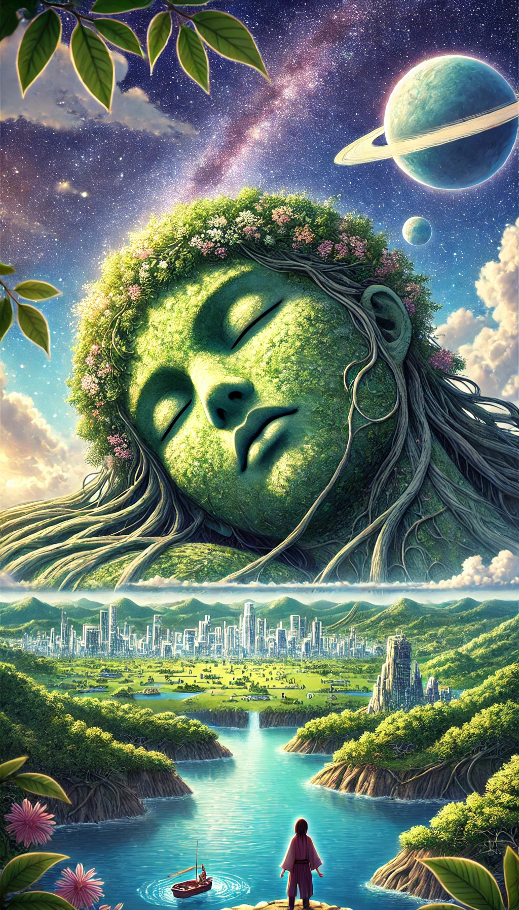

Shelly, a young woman with beautiful brown hair and deep black eyes, had an unassuming appearance like any other resident of her village. Her life revolved around gathering herbs and rare medicinal plants from the mountains—a livelihood she had embraced since she was twelve. Her greatest talent lay in distinguishing plants; she could identify any herb by touch, sight, smell, or even taste, a skill that deepened as she grew to understand the world around her.
One day, Shelly set out on her usual journey to the mountains to collect herbs. Though she had an ample supply stored at her medical greenery—and had even started cultivating her own—she found immense joy in discovering new and rare plants. But beyond her love for herbs, there was something else that captivated her—the colossal, floating figure of a woman, covered in dense vegetation. The sight of Rowana, as the legends called her, filled Shelly with wonder. Were the stories about her true? Was she merely a myth, or did she conceal an even greater mystery?
Today, Shelly resolved to uncover the truth. She had made up her mind to venture toward the forbidden mountains—an untraveled path no one dared to take. The route was deemed cursed, with tales of climbers who had fallen to their deaths, fueling fear among the villagers. But Shelly, with ten years of mountaineering experience, dismissed these stories as mere superstition. To her, those deaths were nothing more than accidents caused by carelessness and arrogance. She saw no reason to be afraid.
However, there was a more compelling reason for her journey. A place so untouched, steeped in legend, might hold the rarest herbs—ones that could act as an elixir of life itself. She was determined to find them.
With that goal in mind, she embarked on her expedition. The deeper she ventured, the more untamed the wilderness became. The jungle grew dense, its canopy thick enough to shroud the sky in darkness. Strange reptiles and insects, rarely seen in human settlements, crawled along the path. Shelly pressed on, relying on her heightened senses of touch, hearing, and smell, as her eyes could barely perceive the world around her.
At one point, she tripped over a root bump but managed to steady herself before falling. Undeterred, she continued forward. She took a brief break, nibbling on a sandwich for energy, and climbed a towering tree to scout the terrain ahead. Just then, she encountered a female bear—a clear sign that a den must be nearby, especially since it was the breeding season.
Holding her breath, she concealed herself behind the thick foliage, her heartbeat pounding in her ears. The bear sniffed the air but soon lost interest and wandered away. Shelly exhaled in relief, grateful for her luck.
After what felt like an eternity of trekking, she finally reached the mountain’s edge. And there, before her, stood the breathtaking sight she had longed to see—Rowana, in all her divine magnificence. The colossal figure floated above, bound by the veins of the earth, her body entwined with nature itself. Shelly gazed in awe, the legendary vision now a reality before her very eyes.
